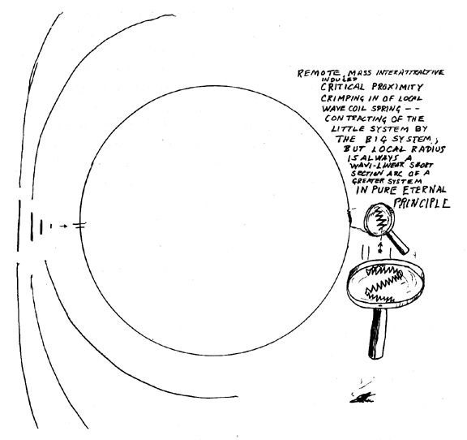

Fig 1009.57A Critical Proximity Crimping-in of Local Wave Coil-spring: Consideration of the little system by the big system. Local radius is always a wavilinear short section arc of a great system in pure principle.
Copyright © 1997 Estate of R. Buckminster Fuller